CAREER · BR Games
BR Games
2014.09 ~ 2017.11 · 기획팀 사원 · Mobile RTS Tales Craft
조작 방식 정의
모바일 RTS Tales Craft의 터치 조작 체계를 레퍼런스 없이 플레이 테스트를 반복하며 직접 정립했습니다. 터치 인터페이스라는 제약 안에서 스타크래프트 같은 PC RTS에서 쓰이는 조작을 거의 대부분 구현해, 유닛 선택·이동부터 건설·스킬·업그레이드까지 하나의 일관된 규칙으로 묶었습니다. 테스트를 거듭하며 굳힌 조작 규칙들은 최종적으로 조작 가이드 문서로 정리해 개발팀·QA의 공통 기준으로 삼았습니다.
| 유닛 선택 | 단일 선택(터치), 다중 선택(손가락 이동 경로 위 유닛을 함께 선택하는 Drag & Drop 방식을 테스트로 확정), 선택 해제(하단 유닛 아이콘을 위로 밀어 해제) |
|---|---|
| 유닛 이동 | 강제 이동, 공격 이동(빠른 두 번 터치), 지정 공격 |
| 건물 건설 / 스킬 사용 | Drag & Drop으로 배치·시전하고, 아이콘 자리로 되돌리면 취소되는 규칙을 건설과 스킬에 동일하게 적용해 조작 일관성 확보 |
| Build 시스템 | 본성 1~3티어 업그레이드에 따라 생산 목록·방어타워·스킬을 단계적으로 Unlock, 단계별 아이콘 정렬 규칙까지 수립 |
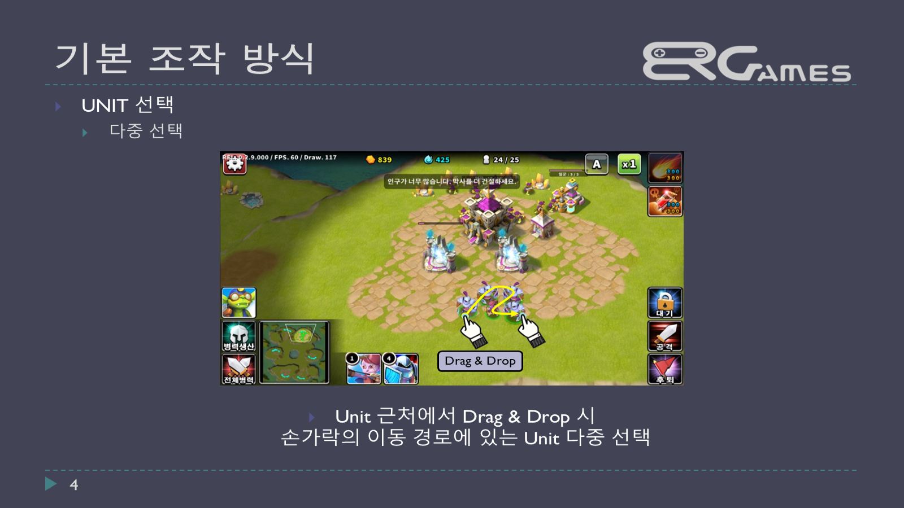
유닛 근처에서 Drag & Drop 시 이동 경로 상의 유닛을 다중 선택하는 조작 정의
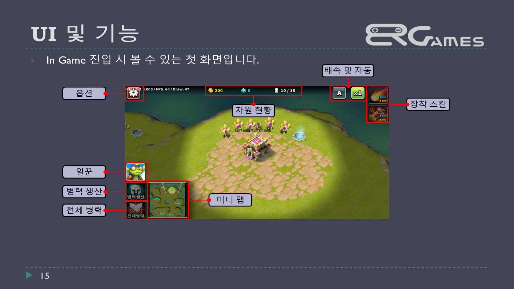
인게임 진입 시 첫 화면 — 자원 현황·일꾼·병력 생산·미니맵 등 UI 요소 정의
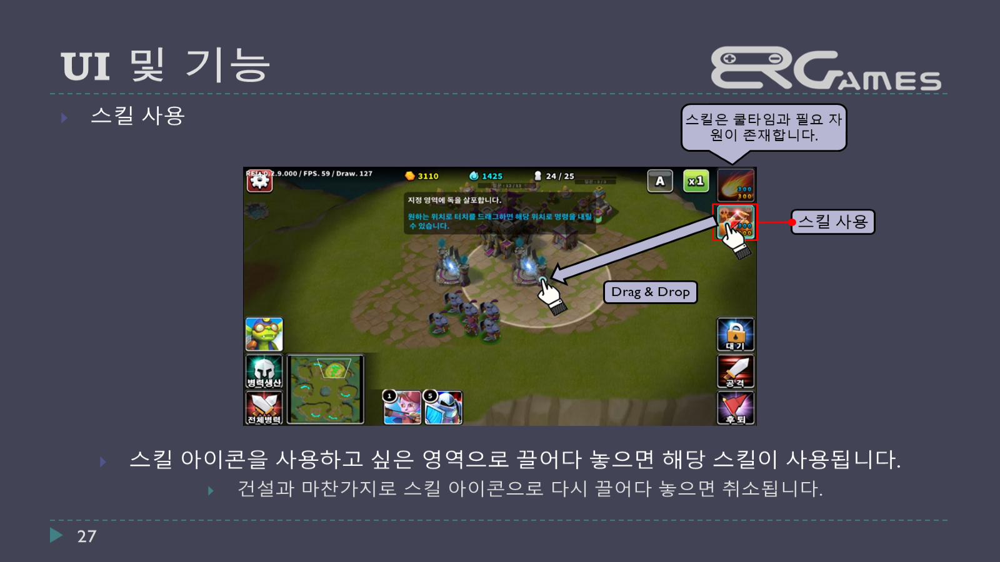
스킬 사용 — 스킬 아이콘을 원하는 영역으로 Drag & Drop해 시전, 건설과 동일하게 아이콘 자리로 되돌리면 취소되도록 규칙 통일
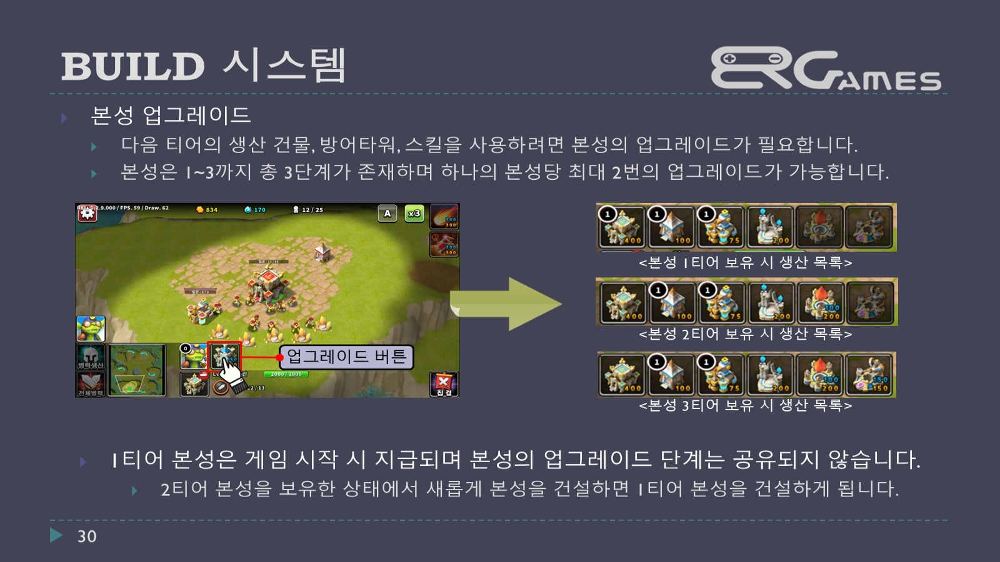
본성 1~3티어 업그레이드에 따른 생산 목록 변화를 정리한 Build 시스템
레벨 디자인
PvE 반복 콘텐츠 ‘천공의 섬(Infinity Battle)’의 스테이지 진입 구조와 전투 방식을 기획하고, 하나의 공용 MAP으로 여러 Stage를 운용할 수 있도록 적 배치 지점·공격 방향·아군 시작점을 표준화된 레이아웃으로 설계했습니다.
- 진입 시 타이머 노출, 영웅 최대 3명 소환(자원·인구 제한 없음), 모든 적 처치 시 승리
- 공용 Map에 적 배치 지점 3곳 + 아군 시작점 1곳을 두어 스테이지별 난이도만 다르게 구성
- 화면보다 큰 월드맵을 좌우 스크롤하며 Stage를 순차적으로 오픈하는 진행 구조 설계
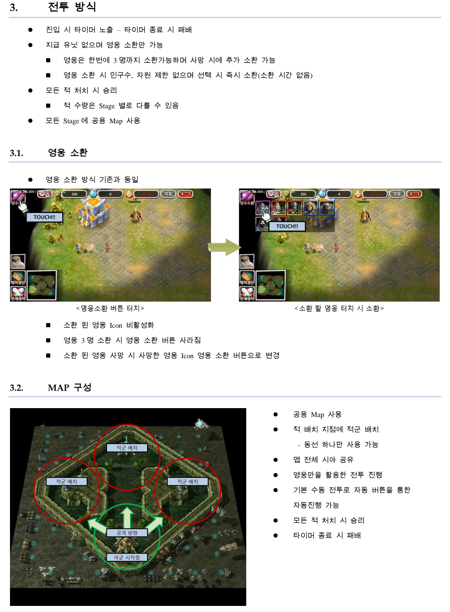
천공의 섬 기획 문서 8p — 전투 방식(영웅 소환)과 MAP 구성(적군 배치 지점·아군 시작점·공격 방향)을 함께 정리
맵 제작 예시 (PvP)
PvP 밸런스를 고려해 직접 제작한 맵 중 일부입니다.
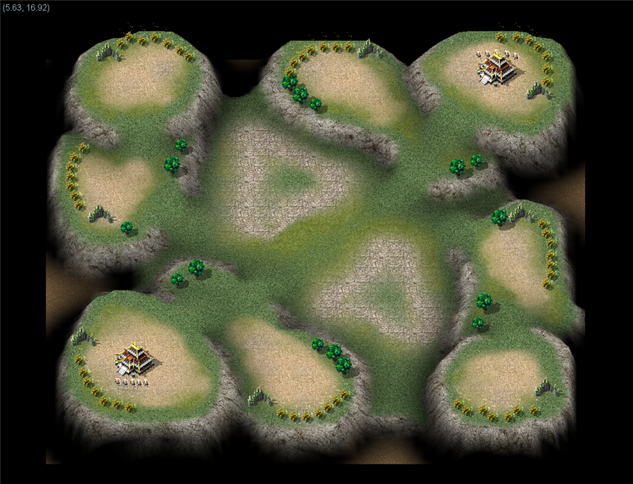
map[000][000] · PvP_1vs1
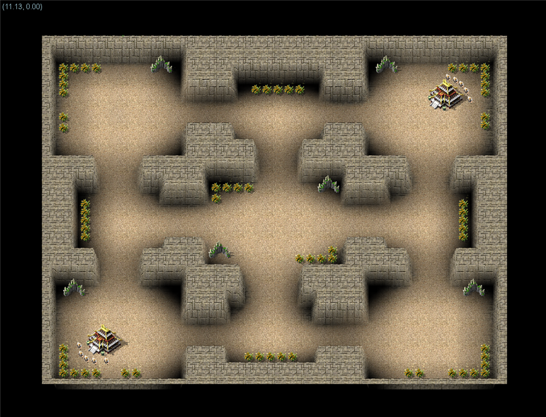
map[000][001] · PvP_2vs2
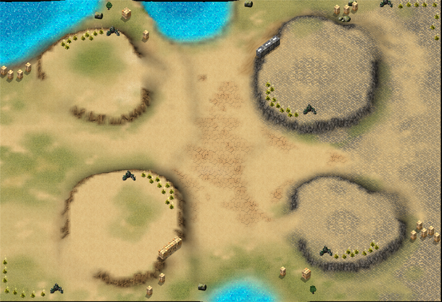
map[000][002] · PvP_2vs2
공격대 시스템
생산 단계 없이 Preset으로 지정한 유닛(영웅+병력)을 즉시 투입하는 ‘공격대(Attacking Forces)’ 전투 시스템을 기획했습니다. 자원 채집 → 건설 → 생산 → 전투로 이어지는 기존 RTS 전투와 달리, 이벤트 전투·거점전·보스전처럼 채집·건설·생산 단계를 생략한 콘텐츠에 사용되는 별도 전투 체계입니다.
- 영웅 슬롯 + 병력 슬롯(연방 상극인 라미아/타이탄 동시 배치 불가, 총 12슬롯)으로 구성된 Attacking Forces UI 설계
- 영웅은 Drag & Drop, 병력은 터치·홀드(COC류 게임의 병력 생산 참고)로 배치·해제하는 입력 방식 정의
- 공격대 업그레이드로 영웅 슬롯 Unlock 및 배치 가능 병력 인구수 증가
- 유닛별 초당 공격력(공격력 ÷ 공격 속도)을 합산한 Forces ATK 수치로 공격대 전투력을 수치화
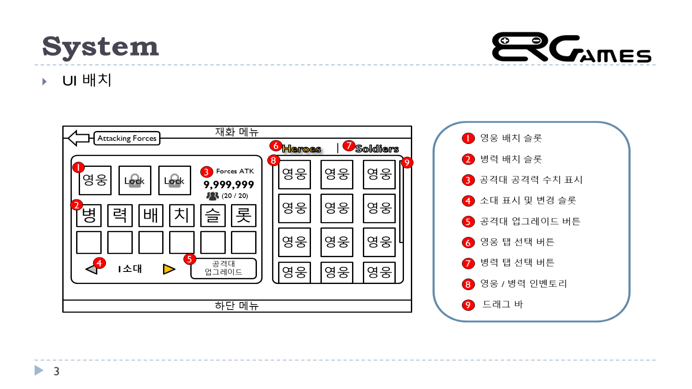
공격대 UI 전체 배치 — 영웅/병력 배치 슬롯, Forces ATK, 소대 전환, 업그레이드 버튼 정의
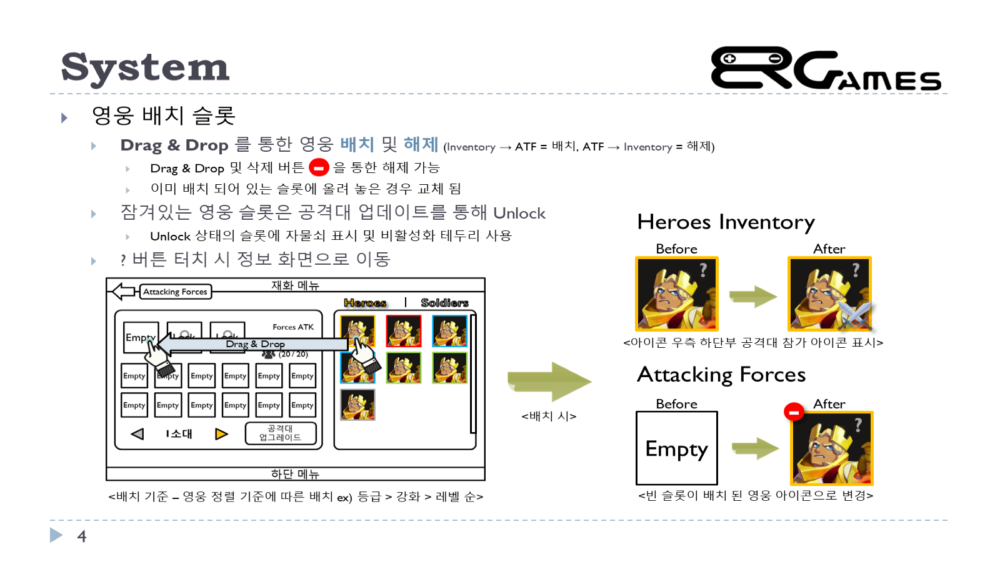
영웅 배치 슬롯 — Drag & Drop을 통한 배치·해제, 배치 시 아이콘 상태 변화 정의
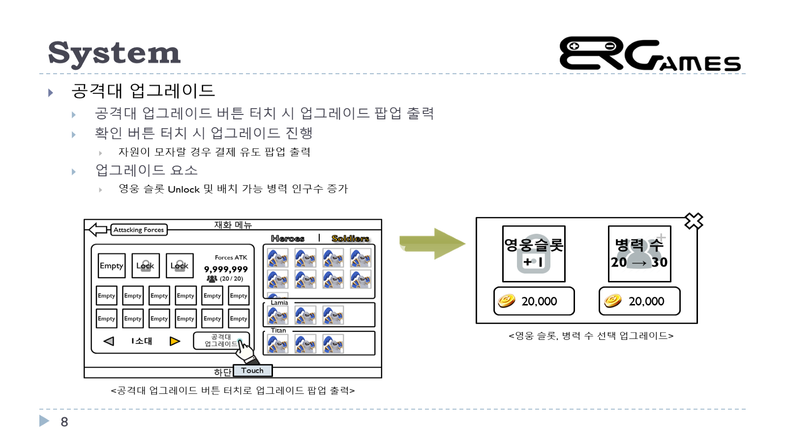
공격대 업그레이드 — 영웅 슬롯 Unlock, 병력 인구수 증가 등 업그레이드 요소 설계